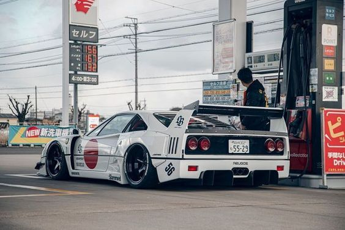

FERRARI ONE OF THE GREATEST CARS

"Ferrari: Where speed meets elegnance, iconic marque synonymous wit speed and luxury."
Here's a brief timeline of Ferrari's history
- 1947s: Enzo Ferrari founds Ferrari S.p.A. and produces the first car under the Ferrari name, the 125 S.
- 1950s: Ferrari starts competing in Formula One racing, winning its first Grand Prix in 1951.
- 1960s: Ferrari expands its road car production while continuing its dominance in motorsports, winning multiple Formula One championships.
- 1970s: Ferrari faces financial difficulties but rebounds with the launch of iconic models like the Ferrari 308 GTB.
- 1980s: Ferrari introduces the Testarossa and continues to innovate in Formula One racing.
- 1990s: Ferrari experiences success in Formula One with Michael Schumacher, winning multiple championships.
- 2000s: Ferrari maintains its Formula One dominance and expands its road car lineup with models like the Ferrari Enzo.
- 2010s: Ferrari continues to produce high-performance cars and remains a prominent force in Formula One racing.
- 2020s: Ferrari adapts to changing automotive trends and continues to innovate while maintaining its legacy of performance and luxury.
If you have time, you should see more about this incredible car on there WEBSITE